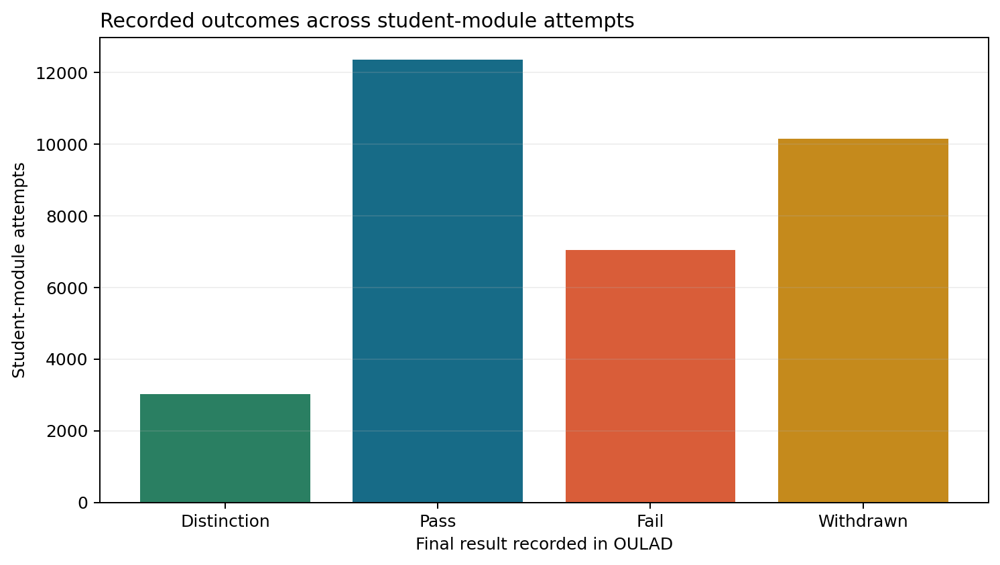
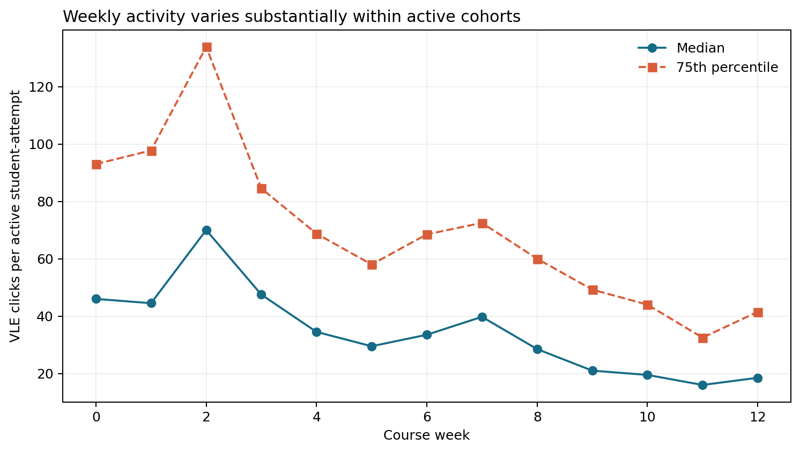
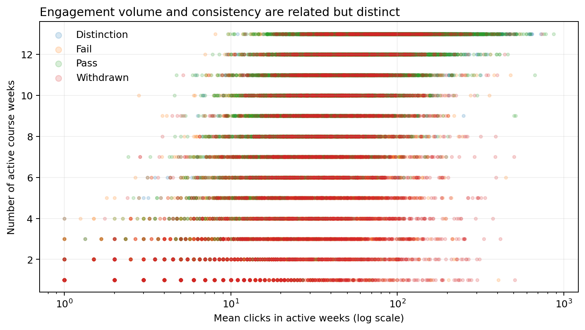
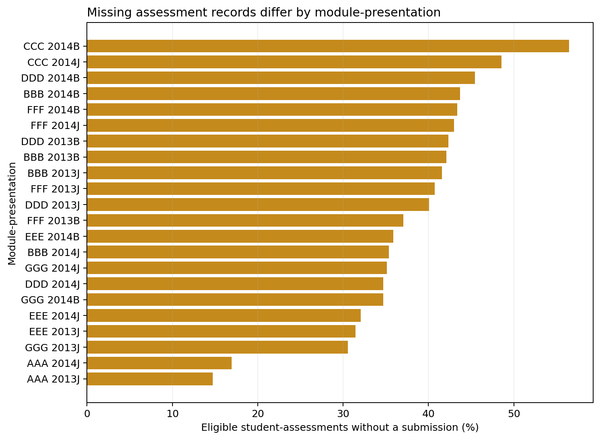
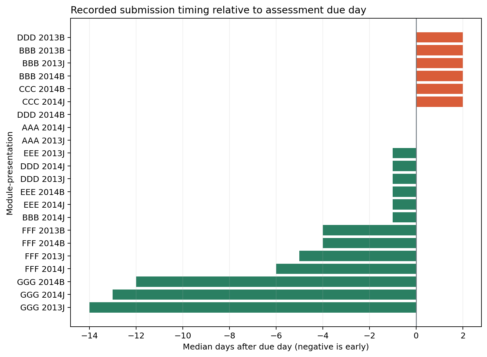
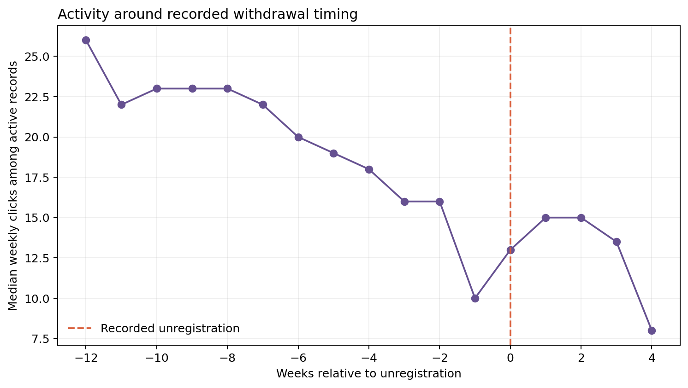
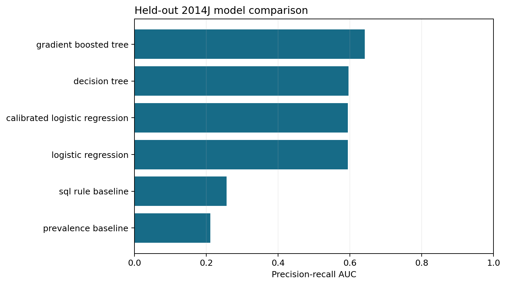
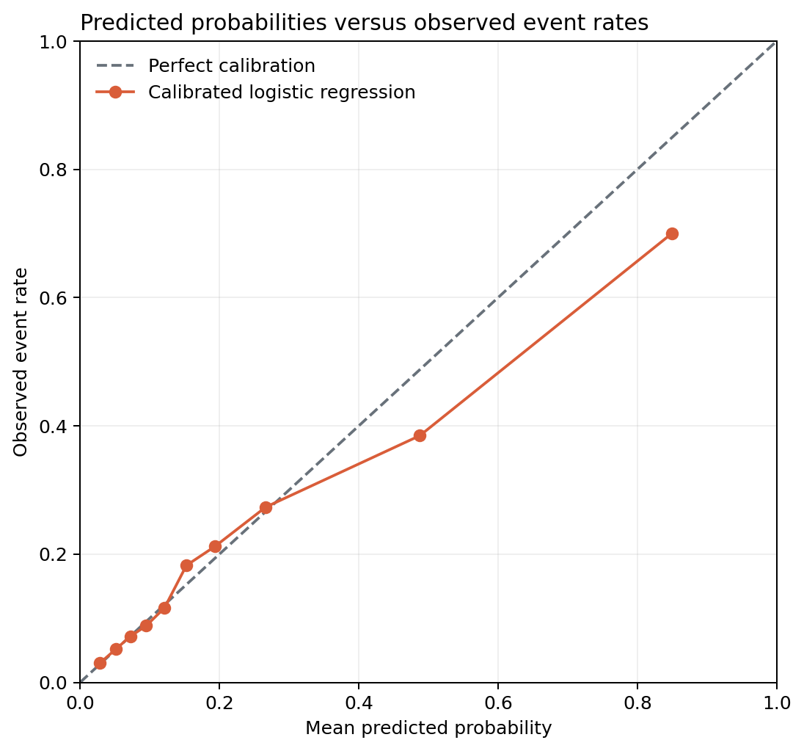
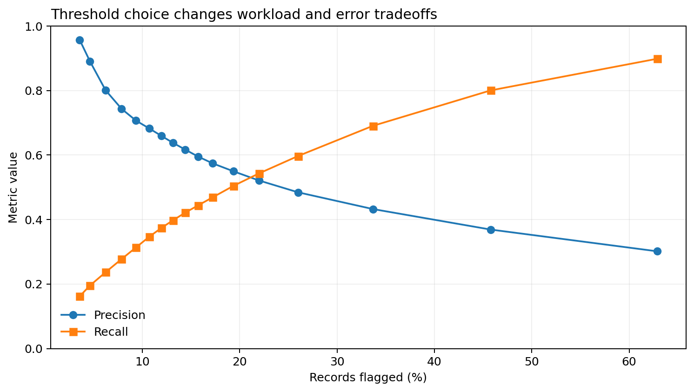
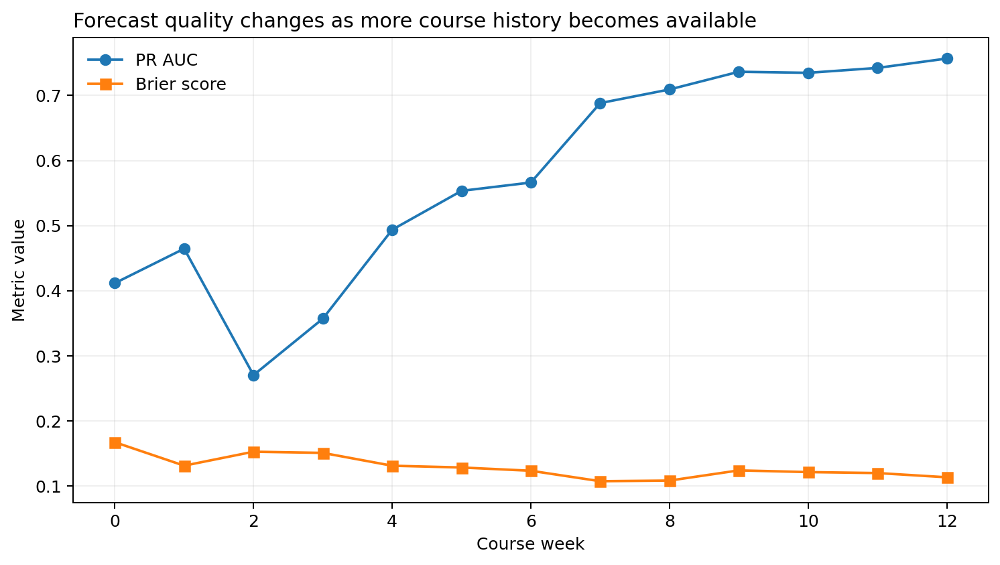

A focused view of anonymized historical patterns and model behavior. This is
not an operational student-monitoring interface and contains no action list.
7modules
22presentations
28,785unique students
32,593student attempts
206assessments
10,655,280activity records
Architecture
SQL defines the analytical contract
Official OULAD files -> Python source audit -> PostgreSQL raw, staging, and
core layers -> SQL marts and weekly snapshots -> Python statistics,
visualization, and modeling.
Executed analysis
Patterns in the downloaded archive

Recorded outcomesCounts are student-module attempts, not unique people.

Weekly engagementThe median and upper quartile describe active records only; clicks do not measure motivation.

Consistency and volumeLog-scaled volume and active-week count expose different aspects of recorded platform use.

Assessment completenessDifferences may reflect course design and recording practices as well as student behavior.

Submission timingNegative values indicate that the median recorded submission was before the due day.

Withdrawal timingAlignment is descriptive and cannot identify why an attempt ended.

Held-out model comparisonComplete 2014J presentations form the test set; correlated weekly rows are not randomly mixed.

Probability calibrationCalibration checks whether similar predicted probabilities have similar observed event rates.

Threshold tradeoffsChanging the threshold changes both the number of records flagged and the error balance.

Forecast timingForecast performance changes as a longer course history becomes available.
Forecast evaluation
Next-assessment event, evaluated by presentation
Held-out calibrated logistic PR AUC 0.594; Brier score 0.130. The target is a missing next assessment by its due
day or a recorded score below 40. Features use only data available through
each weekly snapshot.
Limits
Clicks are traces, not explanations
OULAD describes selected anonymized Open University modules from 2013-2014.
Clicks do not directly measure effort, motivation, attention, or learning.
Withdrawal may reflect circumstances absent from the data. Findings are
associations and may not generalize to another institution or period.